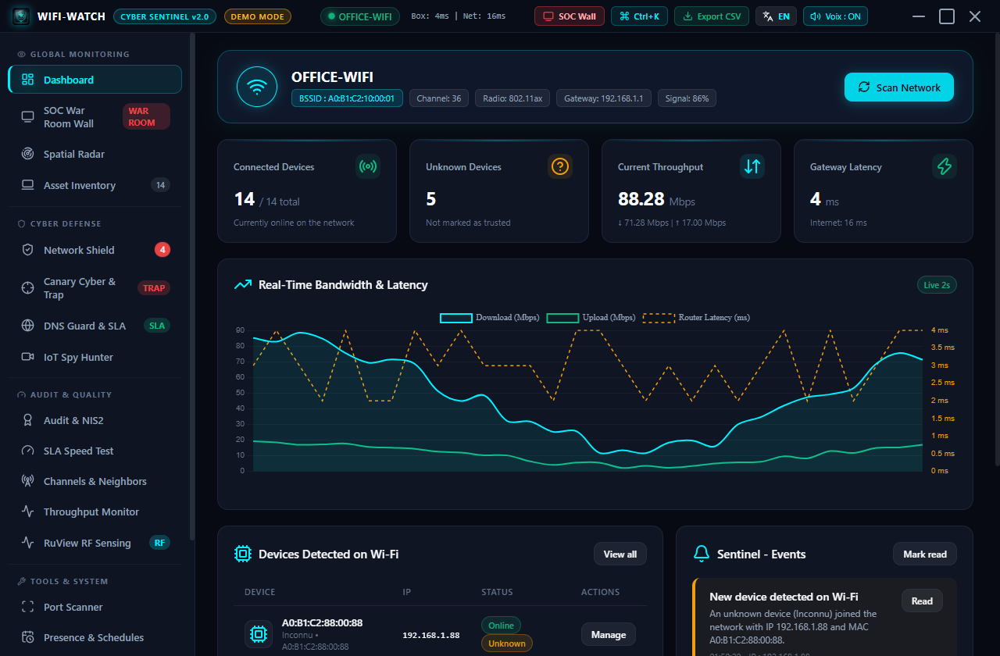

Dependency updates and a demo mode that fills the app with a fictional network.
Device inventory and radar
Every device on the network with its vendor, trust status and an owner you assign. Unknown devices stand out right away.
Free and open source for Windows 10 and 11
Wifi-Watch lists every device on your network and warns you about fake access points, rogue DHCP servers, ARP spoofing and hidden cameras. No driver, no account, nothing sent to the cloud.

Screenshots come from the built-in demo mode: a fictional network, no real data.
One portable app. Open it, scan, and read the result.
Every device on the network with its vendor, trust status and an owner you assign. Unknown devices stand out right away.
Spots a fake access point that copies the name of your Wi-Fi, and shows its channel and signal.
Warns when a second DHCP server answers or when your router's MAC address suddenly changes.
A decoy port that nobody should touch. If something probes it, you get a critical alert.
Finds IP cameras and open video streams (RTSP) on your network, and flags the ones with no authentication.
A security score, a compliance table and an HTML report you can hand to a manager or an auditor.
A wallboard for a meeting-room screen: radar, alerts and network health at a glance.
See which Wi-Fi channel is crowded, get a recommendation, and measure latency, jitter and throughput.
Block a suspicious device with a Windows Firewall rule on this PC. Easy to undo, and no router access needed.
Wifi-Watch does its work on your PC and keeps what it finds there.
No suspicious network at hand? Demo mode loads a fictional office with 14 devices, a rogue access point and live alerts.
Wifi-Watch-Portable.exe --demo
You can also start it from Settings. Nothing is scanned, no firewall rule is created, and your real data is never touched.
A free tool should say what it cannot do.
Dependency updates and a demo mode that fills the app with a fictional network.
Built-in update check: the app tells you when a new version is out. It never installs anything by itself.
Cleaner interface, nicer empty states, and a clearer README with a privacy table.
Security hardening, French and English interface, tests and continuous integration.
One portable file. No installer, no admin rights needed to scan.
Wifi-Watch-Portable.exe and run it.